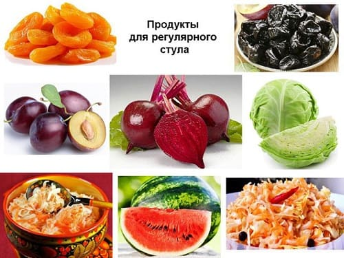
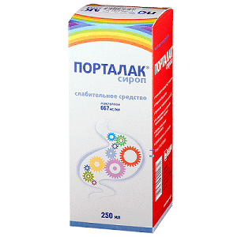
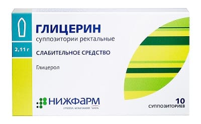

Начнем с определения, взятого из «Энциклопедического словаря медицинских терминов». Итак, «ЗАПОР – замедленное, затрудненное или систематически недостаточное опорожнение кишечника». Определившись, попытаемся разобраться по существу проблемы, которая для тысяч людей всех возрастов является весьма актуальной.
Отношение к запорам – их опасность для здоровья и интенсивность способов терапии – во многом определяется возрастом человека. Принципиально важен тот факт, что серьезные причины – врожденные нарушения строения кишечника или обмена веществ – выявляются, как правило, в раннем детском возрасте. Если человеку больше трех лет и он по крайней мере внешне выглядит здоровым – не дистрофик, нет тяжелого ожирения, соответствует возрасту умственное развитие, – вероятность того, что причина запора связана с какими-либо врожденными аномалиями, крайне невелика.
Главный вывод из предыдущего абзаца состоит в том, что к запорам в раннем детском возрасте следует относиться значительно серьезнее, чем на протяжении остальной человеческой жизни, поскольку именно на этом временном отрезке следует убедиться в отсутствии серьезных причин для беспокойства.
По большому счету, у детей первого года жизни только одно заболевание является серьезной и опасной причиной запоров – это болезнь Гиршспрунга. Суть болезни – не развиты нервные клетки на одном из участков кишечника. Причина – нарушение развития эмбриональной ткани, а почему это происходит, никто достоверно не знает. Понятно, что если на определенном участке кишечника неправильно функционируют нервные клетки, то и сам этот участок функционирует неправильно. При болезни Гиршспрунга «неправильность» проявляется в том, что пораженный участок кишки находится в постоянном состоянии сокращения – над ним скапливаются каловые массы и, что вполне естественно, имеет место запор. Лечение болезни Гиршспрунга – только оперативное. Смысл операции – удаление неработающего участка кишки, а сложность вмешательства очевидна, особенно с учетом того, что оперировать приходится детей первого года жизни. Но без операции ребенок обречен.
К счастью, болезнь Гиршспрунга встречается не так уж часто (один случай на 2–5 тысяч новорожденных). Поэтому 99 % детских запоров и практически 100 % запоров у взрослых не представляют опасности для жизни, хотя и могут реально омрачать эту самую жизнь.
Всегда следует помнить, что посредством индивидуальной трудовой деятельности, т. е. без помощи врача, установить причину запоров довольно трудно. В конце концов, запор сплошь и рядом является не самостоятельной болезнью, а лишь симптомом другого заболевания – язвенной болезни, геморроя, панкреатита, холецистита, нарушения функции щитовидной железы и т. д. В то же время, и это бывает довольно часто, самое углубленное обследование не позволяет выявить причину запора. Кстати, эта самая причина гораздо чаще не обнаруживается, чем обнаруживается. Но предпринимая лечебные попытки устранить запор – будь то специальная диета, клизмы или слабительные средства, – всегда стоит быть уверенным в том, что нет ничего более серьезного. Отсюда вполне логичный вывод: обращение к врачу-специалисту (гастроэнтерологу) всегда окажется не лишним.
Совершенно очевидно, что если обследование выявило конкретную болезнь, то и главные лечебные усилия должны быть направлены не на спасение от запора, а на лечение конкретной болезни. А вот ежели ничего не выявили, то тут вам вполне может пригодиться настоящая глава – уж если решили заниматься самолечением, то постарайтесь, по крайней мере, не делать глупостей и знать, как говаривал великий пролетарский поэт, «что такое хорошо и что такое плохо».
• Запор – это плохо. Не беда, не трагедия. Неприятность. Себе или своему ребенку вполне можно помочь. Но как?
• Существует два важнейших условия нормального функционирования кишечника. Обеспечение организма, во-первых, достаточным количеством жидкости и, во-вторых, достаточным уровнем калия. Если человек теряет много жидкости и солей, нарушается работа кишечных соков. Возможно это, например, при потливости, при высокой температуре тела в связи с какой-либо инфекционной болезнью или в связи с сухостью и высокой температурой окружающего воздуха. Калий для кишечника – как бензин для автомобиля. При нехватке калия сокращения кишечника (так называемая перистальтика) резко ослабевают и это вполне может быть причиной запора. Больше всего калия в изюме, кураге, черносливе, инжире.

• Принципы диетотерапии заключаются в следующем. Нежелательны продукты, богатые белком – шоколад, творог, орехи. Желательны – йогурты, однодневный кефир и простокваша. Черный хлеб лучше, чем белый. Яблочный сок лучше, чем целое яблоко. Вообще при запоре вегетарианство – очень хорошо. Кстати, употребление на ночь одного стакана простокваши + 20 штук запаренного чернослива позволяет избавиться от запора в 25 % случаев без всяких других лекарств. В любом случае помните: не бывает при запорах категорически можно и категорически нельзя. Всегда желательно решать проблему, но не портить при этом себе или своему ребенку жизнь вечными диетами. Поэтому если очень хочется, то можно.
• Идеальным (самым, пожалуй, безопасным) средством лечения запоров у детей первого года жизни и реальной помощи в любом возрасте является лактулоза (коммерческие названия – «дюфалак», «нормазе», «лизалак», «порталак»).

• Не следует забывать о том, что лечение запора, как, впрочем, и лечение любого заболевания, должно быть комплексным. Этому не учат в популярных книгах, этому учат в мединституте. Арсенал средств, которые может назначить при запоре врач, далеко выходит за рамки только приема слабительных – это и препараты, уменьшающие тонус кишечника, и ферментные средства, и многое другое.
• Нередко причиной запора является геморрой и трещины в области ануса, когда готов ходить в туалет хоть три раза на день, но так страшно, что терпишь до последнего. В этой ситуации, помимо специфического лечения, очень хороший эффект оказывают свечи с глицерином и свечи с облепиховым маслом. Кстати, свечи с глицерином – один из наиболее доступных и безопасных способов борьбы с запором у детей первого года жизни. По крайне мере, до того, как ставить ребенку клизму, следует использовать эти свечи.

• Помимо проблем с самим процессом, нередко возникают проблемы с местом, где этот процесс происходит. Сам туалет – его месторасположение, температура, наличие очереди, санитарные условия, запахи и многое другое – вполне может стать причиной запора, но не на уровне кишечника, а на уровне головы. Разумеется, мы не всегда имеем под рукой, точнее под ягодицами, теплый унитаз в изолированной квартире, но мы, по крайней мере, просто обязаны учитывать этот факт до того, как мчаться в аптеку за касторкой.
Суть настоящей главы состоит в следующем.
Запор – весьма распространенное патологическое состояние, обусловленное, чаще всего, не серьезными расстройствами в организме, а элементарным непониманием того, что не ходить в туалет по три дня – это неправильно и что за частотой стула надобно следить. Запор – болезнь цивилизации, его компоненты – стрессы, отсутствие в рационе грубой пищи, кипяченая вода, непривлекательного вида туалеты. Но, в отличие от многих других болезней, запор в подавляющем большинстве случаев неплохо поддается лечению, а средства, используемые для этого, вполне безопасны. Так может, попробовать?
Е.О.Комаровский. "Здоровье ребенка"